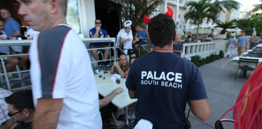
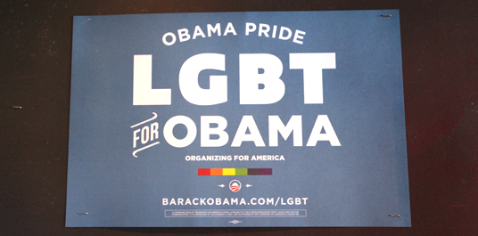

Jackson Wayland a grandi dans une petite ville de Géorgie (sud). Aujourd'hui âgé de 23 ans, il est serveur dans le bar gay "The Palace", situé sur la plus célèbre avenue de Miami, Ocean Drive.
Le 6 novembre, il votera Barack Obama, un président dont il se sent fier. "Il défend des valeurs qui me sont chères. Je trouve ça formidable qu'il se soit prononcé en faveur du mariage gay. Quant à Romney, il n'a aucun respect pour les homosexuels. Comment pourrais-je voter pour quelqu'un comme ça ?", explique-t-il.

Au travail, Jackson est habillé comme l'ensemble du personnel du "Palace" et porte un serre-tête surmonté d'oreilles de démon. Un accoutrement qui fait étrangement écho à ce que ses parents, des baptistes très pratiquants, lui ont dit quand il leur a fait part de son homosexualité : "Ils sont persuadés que les gays vont en enfer après leur mort".
 "J'avais voté pour John McCain et Sarah Palin en 2008, car j'étais jeune et encore très influencé par ma famille et mon entourage, très conservateurs. Mais après avoir quitté ma petite ville, j'ai pu voyager et mieux comprendre le monde. Tous mes amis homosexuels vont voter pour Obama. Il fait presque l'unanimité au sein de notre communauté, j'espère qu'il va gagner", s'enthousiasme le jeune homme.